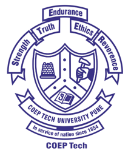

About me
I am a graduate student at Carnegie Mellon University with experience as a Software Engineer II at Mastercard. I have a strong interest in machine learning and problem-solving. I am passionate about learning new things and exploring innovative ideas. I enjoy reading Technology blogs and watching Tv-series.
Education
Master of Information Systems Management
Carnegie Mellon University, Pittsburgh, PA
2024 - Present

B.Tech in Information Technology
(With Honors in Computer Engineering)
College of Engineering Pune (COEP), Pune, Maharashtra
2017 - 2021
Research Work
Skills
Programming Languages


Platforms and Frameworks